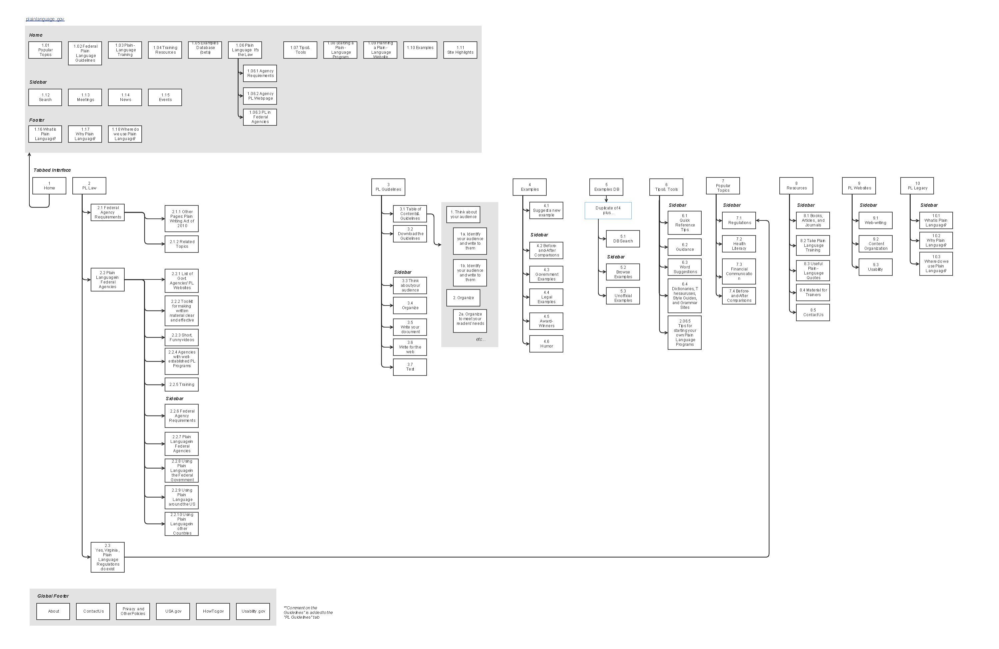
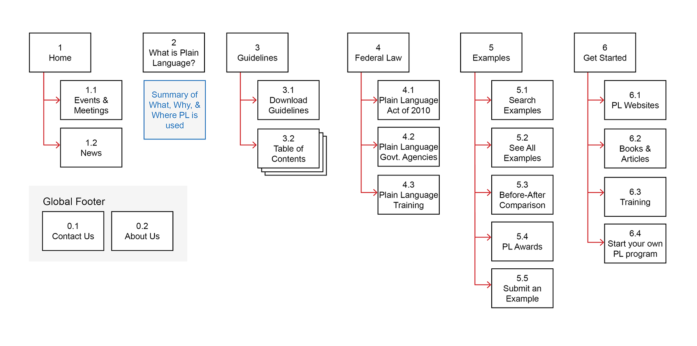

Information Archeitecture, Sitemap, Content Evaluation, Content strategy & Wireframming.
Project Details
Challenge: Students were tasked with improving a website’s IA using site maps, wireframes, and a content analysis. I chose to restructure plainlanguage.gov, a website last updated in 2005. The website is currently riddled with unnecessary and outdated information along with confusing structure.
First I set the project’s business goals, design goals, scope, user groups, and risks in a "Project Overview" document. Then I created a site map to reflect the current state of the website’s structure, including the primary and secondary levels of the entire website as well as the tertiary level of one tab.
Business Goals
Increase adoption of plain language by more government agencies.
Have plainlanguage.gov become the trusted source for copywriters and lawyers to find
information about plain language.
Increase global understanding of the purpose and mission of plain language and its benefits to society.
Design Goals
Reorganize the website’s content to provide a more intuitive structure that improves
findability of the website’s wide range of functionality and content.
Redesign the home page so that users can quickly see the scope of resources available and find information relevant to their needs.
Implement current design patterns to make the website intuitive and consistent.
Standardize the layout and navigation between sections of the website.

Initial Sitemap (created with Gliffy)
This activity unveiled many problems with the website’s structure:
The homepage did not reflect the website’s structure or content.
Categories were not targeted towards users’ typical needs.
The large amount of content on the website resulted in a complex structure.
Content Evaluation
Conducting a qualitative and strategic content evaluation revealed many content issues. The most severe issues were about the findability,
accuracy, and usability of the content:
Findability:
Website Architecture and Navigation hide content from users and the “Search” function is broken.
Accuracy:
The event displayed on the homepage is over 2 years old and many links (e.g. all on “examples” page) result in a 404.
Usability:
Links are presented within long sentences and paragraphs, inhibiting “information scent” and skimming. Content that should be on one page is split into
multiple pages.
Updated sitemap
The updated sitemap implemented a series of improvements:
Eliminates unnecessary pages that don’t meet business goals (e.g. “Popular Topics,” “Useful Plain Language Quotes,” “Usability,” “HowTo.gov,” “Short, Funny Videos”, and more).
Restructured the architecture so the homepage lies on the primary level with other important primary categories.
Rather than supplying information in tertiary links, important content is pushed to primary pages.
The new categories were extrapolated from the personas and probable use cases of the website.

Updated sitemap (created with InDesign)
Wireframes
The final part of the project included a series of wireframe templates that reflected the changes to the sitemap. I chose to create the wireframes in Axure with a mobile-first approach to force a focus on the most important aspects of the interface.
Wireframes include Home page, Primary landing page (with links to
secondary articles), “Examples” page, Article Template
Conducting formal user research using card sorts and tree tests could have validated or contradicted some of my design choices.
I would have started with a smaller scope, then expanded if necessary.
Comparing each piece of content against the personas’ goals would have made it easier to decide what content should exist on the website.
What Went Well
Designing the wireframes mobile-first simplified the layout of the desktop view and kept the interfaces focused and uncluttered.
Doing this project from an information architecture perspective was a good idea, as it unveiled issues with the foundational structure of the website which affect the entire experience.